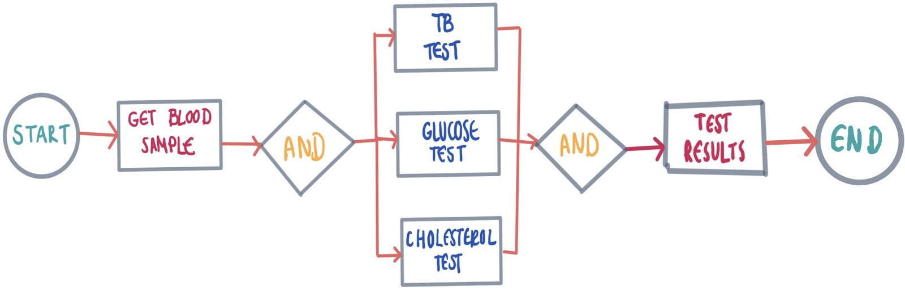
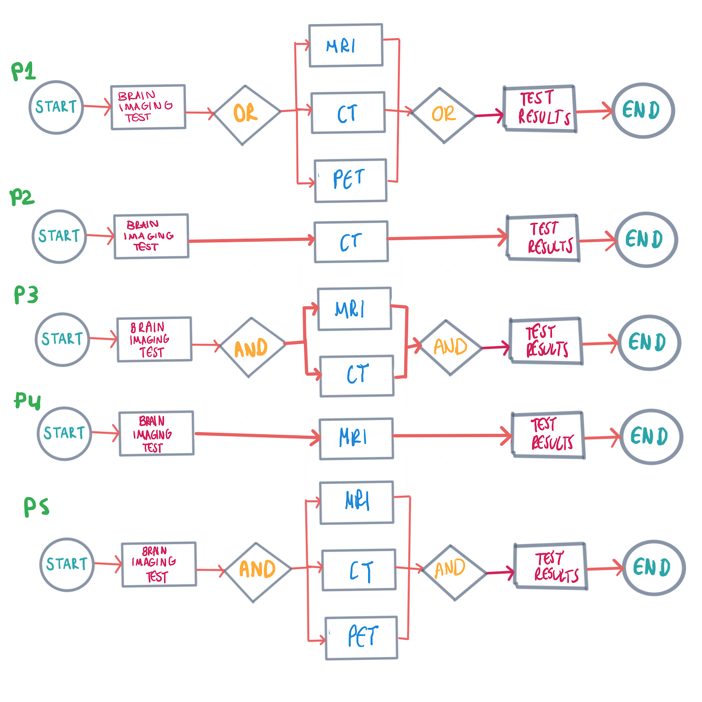
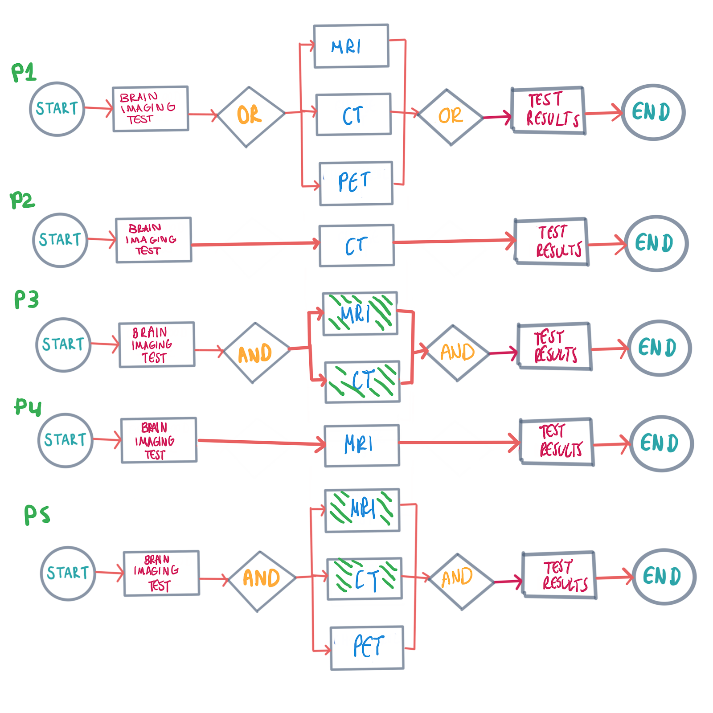
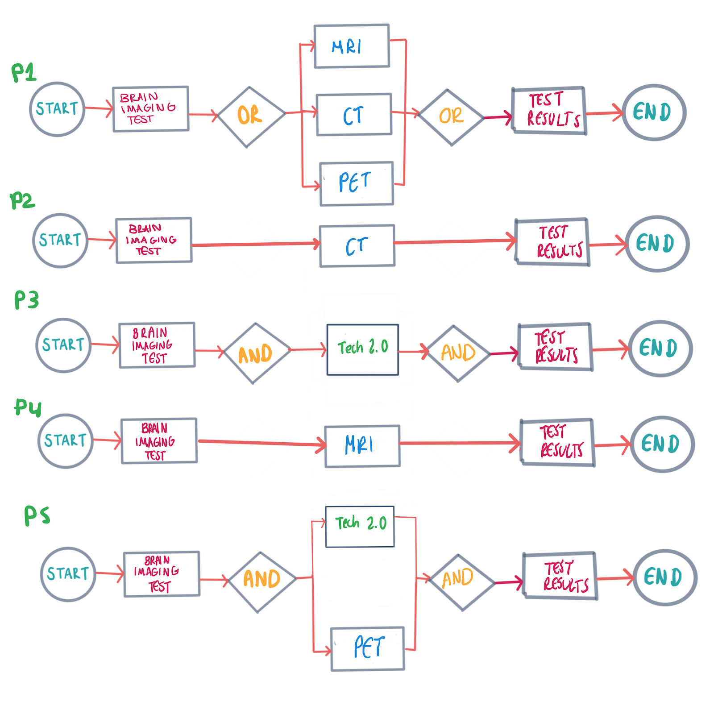
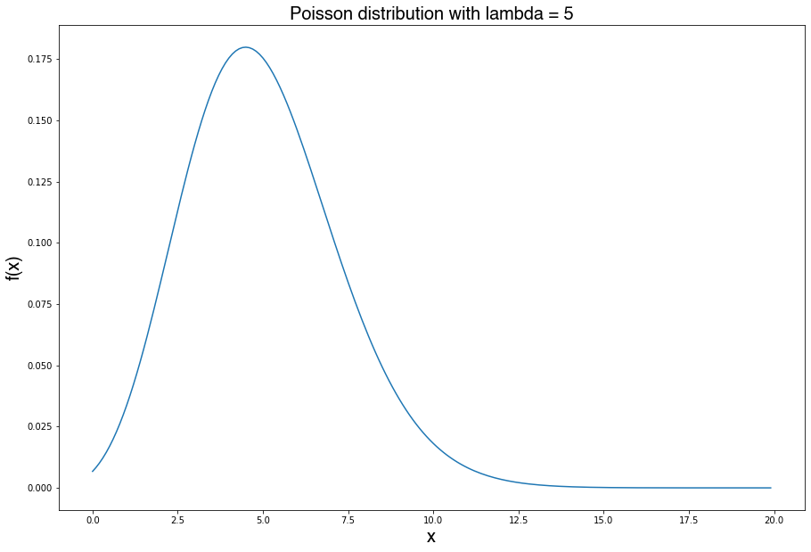
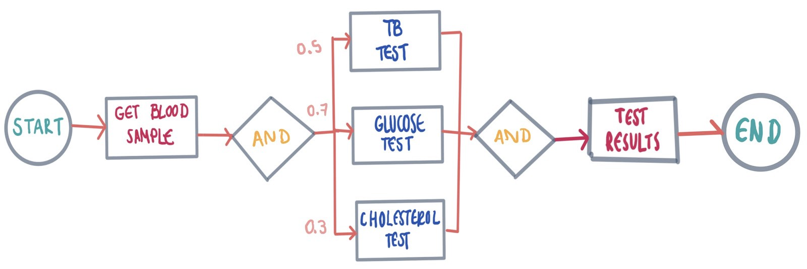
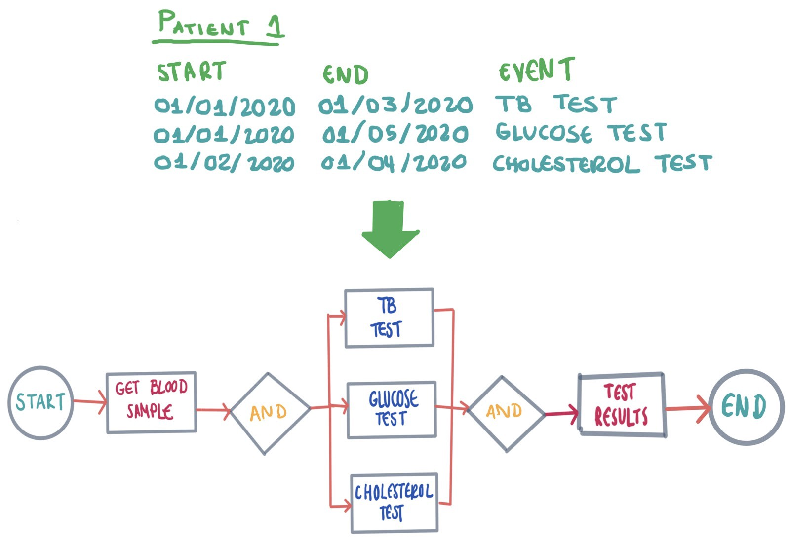

We Need Data to Improve Healthcare Processes at Scale
Note: the fictitious examples and diagrams are for illustrative purposes ONLY. They are mainly simplifications of real phenomena. Please consult with your physician if you have any questions.
Scale is one of the main challenges in public health services. Specialized treatments are hard to track when applied to thousands of patients. Fortunately, we can now identify bottlenecks and errors in the flow of these processes at scale. Through the combination of Process Modelling and Probabilistic Modelling, precision medicine and stratified healthcare has achieved state-of-the-art results like parallel process consolidation, task connections, and task pruning.
Process modeling helps structure a series of steps to perform a task.
In the real world, tasks can run in parallel or series. Processes can have loops, divergent and convergent paths, and unnecessary steps.
Process modeling discovers such complexities and improves upon them. Improving our process models is important since the main objective of stratified healthcare and precision medicine is to achieve an individual, precise and complete treatment for each patient. Stratified healthcare refers to the practice of offering a robust infrastructure to treat patients, while precision medicine seeks to improve the health of individual patients through personalized treatments.
Personalized treatments are a reality, thanks to the Human Genome Project. The Human Genome Project demonstrates that no human is made the same. Therefore, prescriptions and treatments cause different reactions in each individual. Modeling processes allow us to reflect this reality in paper. However, this method is not perfect.
While processes in health go through rigorous statistical tests, they are by no means rid of bias. This bias can impact the flow of steps or parallelism that could be applied to optimize positive outcomes or the speed of the treatments. Additionally, the tools and tests in operations and treatments evolve with time, which shortens steps or reduces the time overhead in these tasks. Updating each process model every time a breakthrough is validated by experts consumes a lot of time.
For example, imagine we currently have these personalized brain imaging processes for 5 patients with a brain tumor:
Let's say we have a new technology called BrainImagingx2, which scans a patient's tumor size two times faster than the current brain imaging technology, but it's only precise for patients that can handle both MRI and CT scans periodically:
Naturally, we want to update our 5 model processes. This might be easy to do since we're dealing with only 5 patients at this time. We can review each case manually to evaluate the risk of updating the process model and weigh it against the benefit:
But what happens if suddenly our 5 patients turn into 1,000 different and unique patients, each with their medical history and background? The cost of evaluating each process model manually skyrockets. Even worse, maybe one of our 1,000 patients has a great risk of damage if exposed to the new technology in BrainImagingx2, like electromagnetic fields. Under these conditions, we can't generalize or skip updating models for time and effort optimization. In summary, process modeling's key issue is time and effort from analyzing existing models thoroughly and updating models with time. This gets worse when the number of patient profiles, and therefore the processes modeled increase with scale.
Process mining achieves an automated "understanding" of the processes through the analysis of event logs and expert reviews to approximate processes. Rather than attempting to update existing models, it builds models from the data it is fed. The process of generating updated process models is thus faster. However, it's not a perfect approach. Process mining outputs a greater number of personalized healthcare models. However, generalization or aggregation can still happen since most process mining techniques rely on process analysis, which automatically filters, sorts and compresses the logs fed to the process. We need to avoid generalizing the aggregation of our information to not obscure the edge case illnesses and response our patients could have as a result of their unique genetic composition like we discussed as a fact through the breakthrough of the Human Genome Project.
Another limitation to take into account is that this is an automated method that relies on data, and the quality of the process models exported is directly related to the quality of the information it is fed. The combined data of patients around the world have variance and noise. The different scales (the what), and sometimes even standards of the measurements (the how) impact what we see. Additionally, Electronic Health Records are not always available across the world, so inconsistencies between global records are highly likely. Missing data greatly degrades the quality of these models. Language disparity obscures the understanding learned through these data mining-based approaches.
Source: https://www.apadivisions.org/division-31/publications/records/intakeWe can combine Process Modelling, namely Process Mining, with Probabilistic Modelling to better mitigate these issues. Probabilistic modeling takes uncertainty into account, treating it as noise. A probabilistic model gives a distribution of possible outcomes. By modeling outcomes as likelihoods, the uncertainty is quantified to be further addressed and corrected by statistical methods.
Probabilistic Modelling assumes a relationship between the outcome and the independent variable, however, this is something that needs to be proven. Correlation coefficients and regression analysis are used to perform hypothesis tests. While correlation measures the degree of association between two variables, other methods like regression measures the predictive power of the independent variable should the relationship be represented by a mathematical model. Probabilistic methods assume a model to account for noise and to make inferences based on these models.
To combine both Process Modelling and Probabilistic Modelling, we can represent similar healthcare processes through a single diagram, which is the result of grouping similar patient task histories. In this diagram, each state transitions to multiple states. Each transition has a probability based on the data that was grouped. This way, even if the models are inconsistent with reality, they can be reviewed easily.
Additionally, statistical methods probability distribution fitting can be used to find the distribution that best fits the process modeled. Some examples of these distributions include the Poisson distribution for discrete variables like the task of vaccinating a patient and the Exponential and Gamma distributions for continuous variables like the process of assessing the levels of cholesterol in the body of a patient. Systems with queues, like those of a coffee shop, a computer server, and more specifically a health clinic can be modeled as probabilities through the theory of Queuing Systems, which incorporate the aforementioned probability distributions. By fitting a distribution, you can determine to which degree the outcomes in your processes are due to chance or not, which helps trim down or update the tasks in processes that matter in healthcare.
Some of the latest applications of Probability Modelling in Process Modelling include dealing with invisible prime tasks through rules and equations utilizing the probability of state transition of Coupled Hidden Markov and double time-stamped in event logs. Invisible prime tasks are usually run in parallel, and it's hard to map this parallelism from raw logs back to XOR or AND gates in the diagrams without manual reviews. Through Coupled Hidden Markov Models, "wherein all of states from each Hidden Markov Model are dependent on the states of all Hidden Markov Model in previous time slice", mapping logs back to process diagrams can now include such parallel tasks. (Sarno & Sungkono, 2016)
New learning methods for process mining based on probability modeling include using a logistic regression model for the discovery of direct connections between events in event logs with noise. (Maruster et al., 2002) Logistic regression addresses noise by treating the occurrence of events as a binary outcome calculated with the independent variable mapped to the sigmoid function, that for extreme positive values still gives a 1 and for extreme negative values still gives a 0. Even so, this function exports a probability as a continuous variable which allows us to show experts the probability of connecting events A and B, allowing further assessment if needed.
There's a classic machine learning example that illustrates the limitations of using probabilistic methods in process mining: you can't say a cancer test classifier is good enough if it predicts that someone doesn't have cancer 90% of the time. This applies to models learned through Probabilistic Modelling in Process Mining. If you have event logs that indicate that 90% of the time after a test you should give a negative result for cancer, what does this probability mean? Let's assume for a second that we didn't know what cancer was and decided that under an arbitrary threshold, and that we were looking to prune out steps in our process to invest more money in those with higher probability. What would happen if we decided to invest more money in the pathway of the process for negative cancer cases, instead of positive cancer cases? Interpreting the probabilities and steps requires a good understanding of their evaluation and implementation. To perform this automatically is a challenge that still needs to be addressed for clinical processes.

Does correlation imply prediction? The relationships found between the components of a process diagram may not be true, they may as well be false negatives. For example, if you find two consecutive event logs for a patient where one is the patient taking medication and the next one is the sickness getting worse, just looking at these isolated logs could draw the naive conclusion that the medication is to blame. However, this may not be the case. If more event logs, both in the past and the future were taken into account, effects of. That's why correlation and regression alone are not enough to s olve these cases. A potential solution for this is the use of probability chains such as Markov Chains and their extensions, that allow the probability of an event to be traced back to an earlier event than its immediate predecessor.
Health information is highly sensible. It is a snapshot of the user's medical, pathological, nutritional, and psychological history. In a world surrounded by taboos for mental illness and HIV, this information needs to be handled with utmost care. Patients are served so that their information is solely used for their recovery and rarely to be sold to third parties in a game of profit.
Process Modelling and Probabilistic Modelling methods aggregate from individual cases to generalize and personalize during treatments when needed. No matter how promising the results look, we need to understand the potential edge cases and caveats of the methods used. For example, the classic photo classification example classified pictures of people of color as monkeys because of the underrepresentation of their skin color in the data gathered for its training. In health, this can lead to a misunderstanding from our models for things like HIV, where most data collected have been documented for the queer community, especially gay men.
References
-
https://www.researchgate.net/profile/Bouchra_Marzak/publication/306046482_Clustering_in_Vehicular_Ad-Hoc_Network_Using_Artificial_Neural_Network/links/5a0c19f0a6fdccc69edaa37c/Clustering-in-Vehicular-Ad-Hoc-Network-Using-Artificial-Neural-Network.pdf#page=75
-
https://link.springer.com/chapter/10.1007/3-540-36182-0_37
-
https://neuroneurotic.net/2015/11/30/does-correlation-imply-prediction/